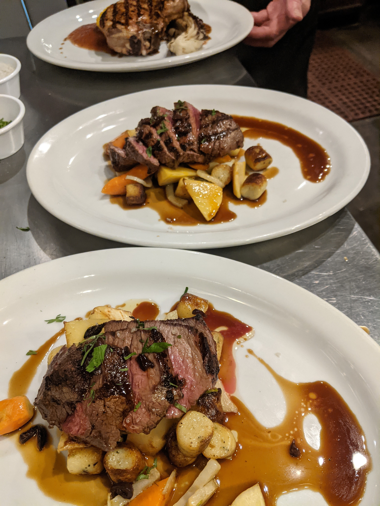

I'm Joseph, or Joe, depending on from which circles you know me. Professionally, I've been a coffee peddler, a chef, and a butcher, following my passion for food and drink. I dropped out of university after only a semester and a half, having changed my focus four times, in pursuit of real world experience, as I was beginning to realize that I didn't know what I wanted to do. Over twenty years later, I'm returning to one of those abandoned collegiate focuses hoping to master another profession and advance myself in a new but familiar direction.
I spend most of my free time exploring the culinary world. Budget willing, I love to try new restaurants around the city, exploring as many menu options as I can. Over the years, I've aquired some strong favorites that I revisit time to time, but mostly I like to seek out the new and unknown. At home my culinary habits aren't much different. I rarely buy prepared foods and mostly cook from scratch. On occasion I'll write down a particularly good recipe, but mostly I prefer to wing it, developing a meal as it progresses instead of strictly following a guideline. My dream for retirement is to open a tiny restaurant somewhere, serving a very small menu of whatever I feel like making from whatever ingredients I can get locally. Maybe it's unrealistic, but I think about it a lot nonetheless.